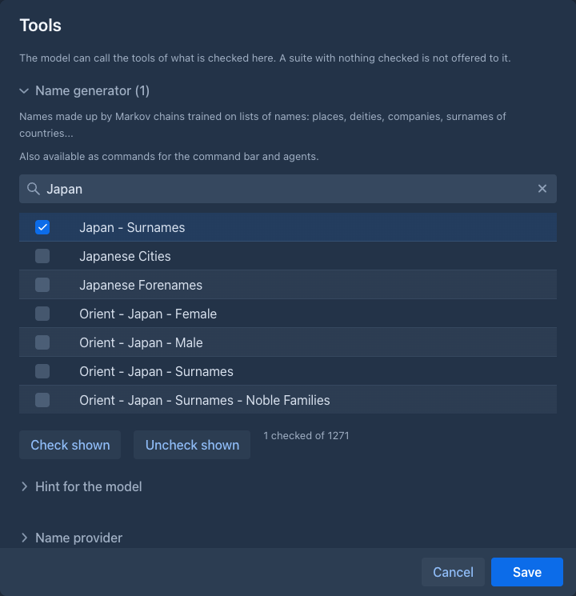

Name generator
Gives the model a way to ask for names instead of inventing them. The names come from lists of real names - given names and surnames of many countries, places, deities, monsters, drugs, companies, foods, and more - and are made new by a Markov chain, so they sound like the category without being copies of it.
The extension has no screen of its own and nothing to configure. Other extensions offer its functions to the model; at the moment that are the Lore Generator and the Arc Outline, where you choose which categories the model may use (see Tools for the model); its suite is Name generator, next to the Name provider of the Name provider, which hands out real names instead of made up ones.

What the model can do
Without a length, the names are as long as the names of that category usually are (a category of long company names gives long names, one of short forenames short ones). The model can ask for other lengths between 2 and 30 letters. A small category may return fewer names than asked for, because the chain runs out of different ones. The model is free to pick one of the names, change it or combine two of them; see the hint of the Name generator suite in the tools window.
Commands
The same names are available as commands, for the command line and for agents,
which can use them in their own prompts (for example for /generate-lore-entry of the Lore Generator):
Both only read.
Categories
There are about 1270 categories. Their names say what they are:
-
Given names and surnames of the world, from Kate Monk's Onomastikon:
Europe Western - France - Surnames,Ancient World - Egypt - Male,India - Hindu Gods - Goddesses. Several hundred of them. -
Surnames of 75 countries, the romanized surnames of the popular names by country dataset (CC0):
Armenia - Surnames,Japan - Surnames,Kosovo - Surnames. They are small lists (6 to about 150 names), so the chains stay short and the new names are close to the real ones; for the real ones themselves use the Name provider. -
Lists from other collections: gods, angels, demons, ancient cities and states, emperors, planets (fantasygen), Corpora (animals, tarot, Tolkien names, Game of Thrones houses, drugs, hospitals, fabrics, gemstones, programming languages...) and markov-namegen-lib (Pokemon, dragons, cocktails, banks, Roman place names...).
Groups
About 170 entries are groups of categories. They put the many small lists of a language together, so you ask for
German - Male instead of picking among Germany - Germanic - Male, Germany - Biblical - Male, Austria - First names - Male
and the rest. They are listed like any category, and a group is one item in the tools window. The groups:
-
By language, each as
- Male,- Femaleand- Surnameswhere there are such lists: German, French, Spanish (the surnames include Latin America), Italian, Portuguese, Dutch, Scandinavian, Finnic, Baltic, Irish, Scottish, Welsh, Celtic (all of them), West, East and South Slavic, Greek, Hungarian, Romanian, Albanian, Caucasian, Turkic, Persian, Arabic, Jewish, Hindu (the four alphabetical lists of male names as one), South Asian, Southeast Asian, Malay-Indonesian, Polynesian and the African regions (West, East, Southern, North, Central).Chinese,Japanese,KoreanandVietnamesehave- Surnames. -
Any gender:
<Language> - Forenames(German - Forenames,Spanish - Forenames,Celtic - Forenames...) takes the male and the female lists of the language and its lists of names for both genders, so a call returns men's and women's names mixed (the shares follow the sizes of the lists, mostly between half and three quarters men). Chinese, Japanese, Korean and Vietnamese have it too. Languages where the mix would be lopsided (Turkic, South Asian, West and Southern African, Malay-Indonesian) have only the male and female groups. -
Of the past: Anglo-Saxon, Medieval Germanic, Medieval English, Ancient Near East.
-
Native American:
Native American - Male,- Femaleand- Surnames(the northern American categories of the Onomastikon: Apache, Sioux, Iroquois, Cherokee, Inuit...) and the same for Central and South America (Aztec, Maya, Inca, Amazonian). -
Other:
English - Surnames(patronymics, trades, places...),Saints,Deities,Fantasy Creatures,Game of Thrones Houses.
For every name the extension first picks one of the categories of the group at random, and then makes the name with the
chain of that category (with its usual lengths). A name sounds like one people and language instead of a blend of all of them,
and one call returns names of several. The lists of the countries, which are split by origin or by letter, are chosen by
their size (a list of 600 names is chosen more often than one of 10); in the groups of whole languages and countries (Turkic,
Caucasian, Baltic, Polynesian, the African regions, Native American...) every member has the same chance. The sources of some
groups are short and partly English translations (Calf-Woman), so the names are rough.
A group is a line in name-groups.json (the members and how they are chosen), see the plugin README.
Each category has a chain of the length that suited it best (short lists get short chains, which repeat the originals less) and the lengths its names usually have. The lists themselves are not part of Marginalia: only the probabilities are, so the original names can't be read out of the extension. Some of the sources have licences of their own, see the plugin README.
Usage
Load the extension in Admin → Extensions. It applies to the next generation; extensions that use it find it when it is loaded, also if it is installed after them or unloaded and installed again - there is no need to restart the Lore Generator. Without it and the other suites, the Lore Generator has no Tools button.